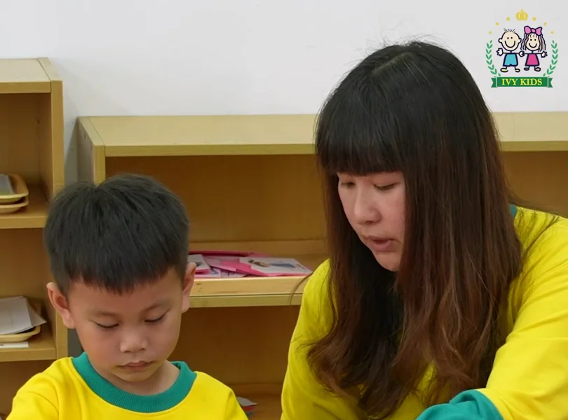

01How to join
每一步，
都有人陪著你。
從第一通電話到開學第一天，大約一到兩個月。每一步都有老師陪著確認，不確定的地方，參觀時直接問我們。

- 01隨時
預約參觀
以電話或親友介紹，確認名額並預約參觀時間。
- 02約好的那天
到園參觀
學校安排專人，帶爸爸媽媽走一圈、聊聊孩子。
- 03決定之後
保留名額
預先繳交訂位金 5,000 元，即可確定保留名額。
- 04開學前約一個月
新生報到
通知報到日，領取代辦品，並繳交註冊費與代辦費。
- 05開學前約一週
導師來電
班導師以電話聯絡，了解寶貝需要特別留意的地方。
- 06開學日
開心上學
前三天以半天為主，讓寶貝慢慢熟悉新環境。
02Which class
寶貝何時入學？
9 月 2 日到隔年 9 月 1 日出生為同一屆。點班別看出生區間，或直接輸入生日。
選好日期，這裡會列出寶貝從幼幼班到小一的每一年，上面的班別也會跟著跳過去。
幼幼班
滿 2 歲入學
學年度 8 月 1 日起算。插班、轉學請參觀時向園方確認名額。
看完整對照表
03First weeks
新生入學二部曲
先適應、再註冊。正面勾一勾必備品，翻到背面看老師的叮嚀。

快樂來上學
每天穿什麼
制服與運動服於註冊後發放。
- MON制服
- TUE運動服
- WED便服
- THU制服
- FRI運動服
接送安全
接寶貝回家時，請出示幼兒接送證（使用一個月），以便識別。
請他人代接時，請在受託人到園前 30 分鐘來電告知；確認身分並登記後，才會把寶貝交給對方。
註冊須知
收費袋每月由園方發給寶貝，請於次月 5 日前由家長親自繳交並簽收，請勿讓寶貝單獨攜帶費用。
收退費依教育局規定辦理，新學期收退費通知單於每學期結束前一個月公告。
04Fees & subsidies 以各校公告為準
補助與退費，
一次看清楚。
收退費依「高雄市教保服務機構收退費辦法」辦理。補助款皆待政府撥款到園後再轉發家長，開學後會協助辦理。
SUBSIDY
15,000元／學期教育部補助大班學費
5,000元／學期高雄市政府補助（符合資格者）中班、小班、幼幼班學費
3,000元／月中央或高雄市政府補助2–5 歲特殊家庭
CHILDCARE ALLOWANCE · REFUNDS
私立幼兒園 2–6 歲育兒津貼不含公立、準公共、非營利幼兒園
- 第 1 胎
- 5,000元／月
- 第 2 胎
- 6,000元／月
- 第 3 胎以上
- 7,000元／月
退費規定
依情況點開查看。實際金額以園方開立的退費單據為準。
01幼兒中途入園
學費及雜費
- 未逾學期教保服務總日數 1/3 入園：全額收取
- 逾 1/3、未逾 2/3 入園：收取 2/3
- 逾 2/3 入園：收取 1/3
保險費
- 依幼兒團體保險相關規定收取
其他代辦費
- 按學期收費者：依就讀月數比例收取
- 按月收費者：自入園當月收取，未滿一個月依就讀日數比例收取
02幼兒未入園或中途離園
學費及雜費
- 學期教保服務起始日前未入園：全額退還
- 未逾學期教保服務總日數 1/3 離園：退還 2/3
- 逾 1/3、未逾 2/3 離園：退還 1/3
- 逾 2/3 離園：不予退費
保險費
- 依幼兒團體保險相關規定辦理退費
其他代辦費
- 按學期收費者：依就讀月數比例退還
- 按月收費者：依離園當月就讀日數比例退還
- 已製成成品者發還成品，不予退費
退費時會發給退費單據，列明退費項目及數額。
03事前請假，連續達五個上課日以上
退費項目
- 按連續請假日數比例退還午餐費、點心費及交通費，其餘項目不予退費
- 請假首日辦妥手續者，連續請假日數不含請假首日
04因法定傳染病等事由，強制停課連續達五個上課日以上
退費項目
- 按停課日數比例退還午餐費、點心費及交通費，其餘項目不予退費
05國定假日及農曆春節，連續放假達五日以上
預先扣除
- 除星期六、日及彈性放假日外，其餘放假期間的午餐費、點心費及交通費，按放假日數比例預先扣除，不另收取
設計示意｜內容取自目前 /admission 的後台預設內容；金額與補助依各校公告及最新政策為準，報名前請向各校確認。